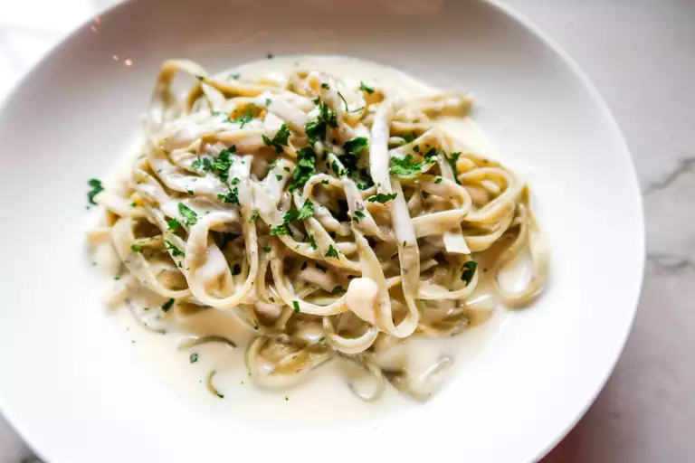

Odin's Famous Alfredo Recipe
The best Alfredo Sauce for those lazy days.
Alfredo is a staple choice for italian gatherings and dinners.
This quick dish is loved for it's rich taste and childhood memories.
An easy sauce of cream, cheese and butter to make your tastebuds
enjoy existing without too much work! Get ready to eat easy tonight!
Ingredients
- Butter
- Heavy Cream
- Parmesan Cheese
- Garlic
- Fresh Parsley
Directions
- In a small pot, melt the butter the add cream and stir until mixed.
- Whisk in the parmesan cheese and garlic until smooth and creamy.
- Stir in parsley at the end. Plate and serve!